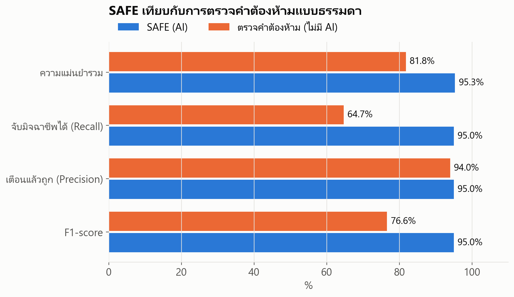
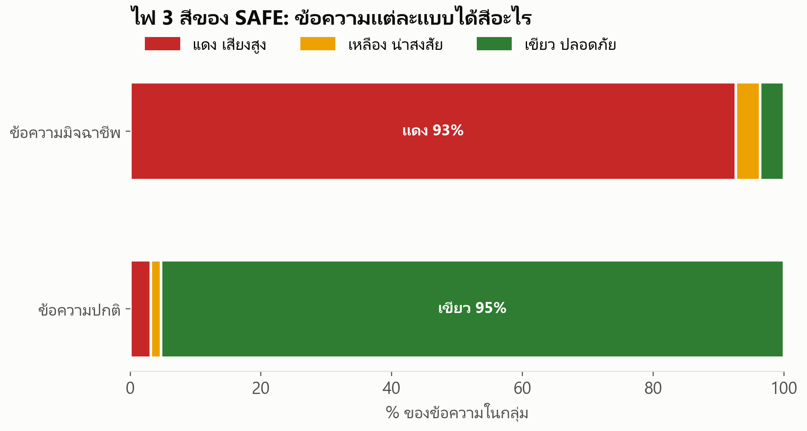
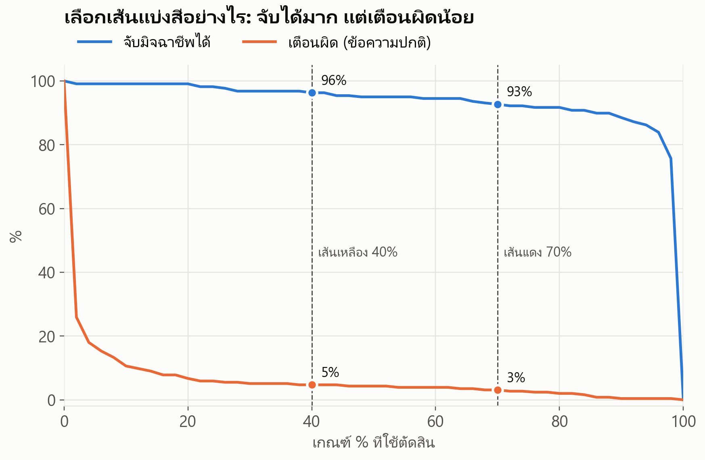
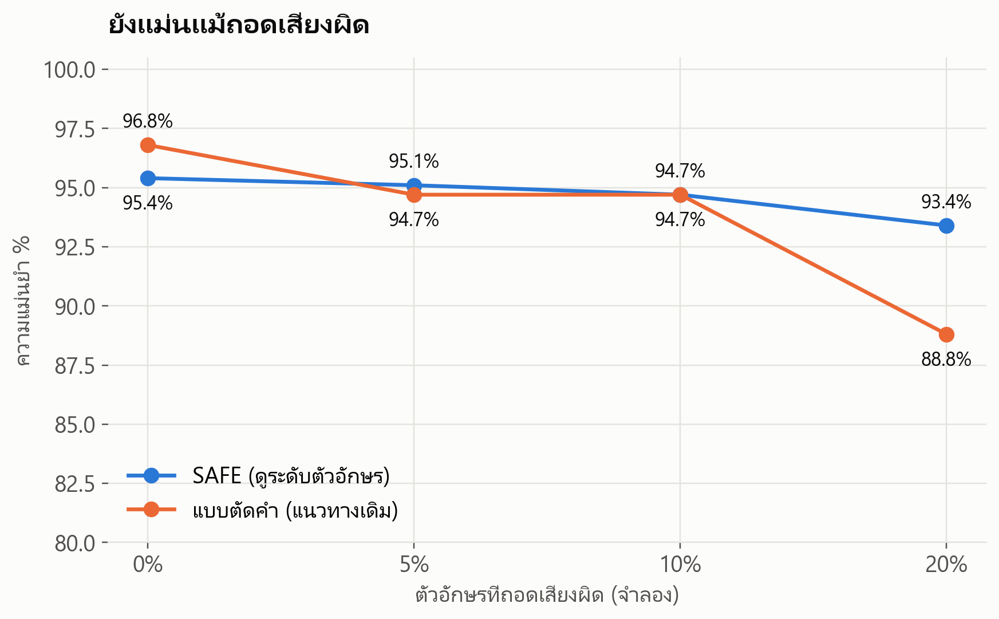
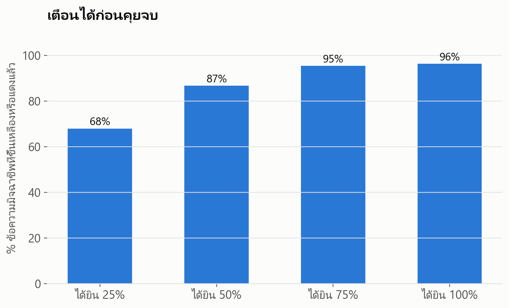
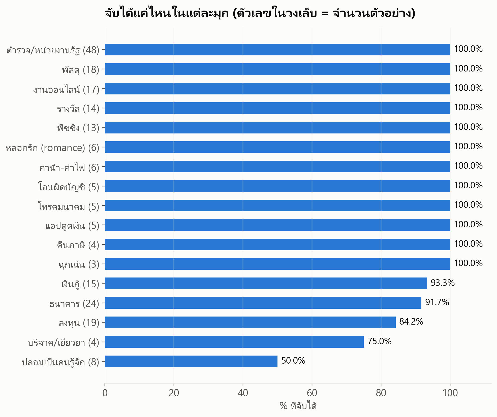

<meta charset="utf-8">
<title>SAFE ผลการทดสอบ</title>
<meta name="claude:viewport-fit-sides" content="cover">
<link rel="preconnect" href="https://fonts.googleapis.com">
<link rel="preconnect" href="https://fonts.gstatic.com" crossorigin>
<link rel="stylesheet" href="https://fonts.googleapis.com/css2?family=Chakra+Petch:wght@600;700&family=IBM+Plex+Sans+Thai+Looped:wght@400;500;600&display=swap">
<style>
/* Layout: report column; each chart is a figure with its one-line finding and an accessible data table */
:root {
  --bg: #f5f7fa; --surface: #ffffff; --ink: #141b26; --muted: #556173; --line: #dde3eb;
  --brand: #1565c0; --brand-soft: #e3edf9; --warn-soft: #fbf1dc; --chart-bg: #fcfcfb;
  --font-display: "Chakra Petch", "IBM Plex Sans Thai Looped", "Noto Sans Thai", sans-serif;
  --font-body: "IBM Plex Sans Thai Looped", "Noto Sans Thai", "Leelawadee UI", Tahoma, sans-serif;
}
@media (prefers-color-scheme: dark) {
  :root:not([data-theme="light"]) { --bg: #0f141b; --surface: #161d27; --ink: #e8edf4; --muted: #9aa6b6; --line: #273242; --brand: #7fb2ec; --brand-soft: #1a2a40; --warn-soft: #2e2512; color-scheme: dark; }
}
:root[data-theme="dark"] { --bg: #0f141b; --surface: #161d27; --ink: #e8edf4; --muted: #9aa6b6; --line: #273242; --brand: #7fb2ec; --brand-soft: #1a2a40; --warn-soft: #2e2512; color-scheme: dark; }
* { box-sizing: border-box; }
[hidden] { display: none !important; }
body {
  background: var(--bg); color: var(--ink); font-family: var(--font-body); font-size: 17px; line-height: 1.7;
  padding-left: max(16px, env(safe-area-inset-left, 0px)); padding-right: max(16px, env(safe-area-inset-right, 0px)); padding-block: 28px 64px;
}
main { max-width: 860px; margin: 0 auto; display: flex; flex-direction: column; gap: 40px; }
h1, h2 { font-family: var(--font-display); line-height: 1.25; margin: 0; text-wrap: balance; }
h1 { font-size: clamp(2rem, 6vw, 2.8rem); }
h2 { font-size: 1.5rem; }
p { margin: 0; }
.lead { color: var(--muted); max-width: 66ch; }
section { display: flex; flex-direction: column; gap: 16px; }
.tiles { display: grid; grid-template-columns: repeat(auto-fit, minmax(170px, 1fr)); gap: 12px; }
.tile { background: var(--surface); border: 1px solid var(--line); border-radius: 14px; padding: 14px 16px; display: flex; flex-direction: column; gap: 2px; }
.tile b { font-family: var(--font-display); font-size: 1.9rem; color: var(--brand); font-variant-numeric: tabular-nums; }
.tile span { color: var(--muted); font-size: 0.92rem; line-height: 1.45; }
figure { margin: 0; background: var(--surface); border: 1px solid var(--line); border-radius: 16px; padding: 16px; display: flex; flex-direction: column; gap: 12px; }
figure img { width: 100%; height: auto; border-radius: 10px; background: var(--chart-bg); display: block; }
figcaption { display: flex; flex-direction: column; gap: 6px; }
figcaption b { font-size: 1.05rem; }
details { color: var(--muted); font-size: 0.92rem; }
summary { cursor: pointer; color: var(--brand); font-weight: 600; }
.tbl { overflow-x: auto; }
table { border-collapse: collapse; width: 100%; font-size: 0.92rem; font-variant-numeric: tabular-nums; }
th, td { text-align: left; padding: 6px 10px; border-bottom: 1px solid var(--line); }
th { color: var(--muted); font-weight: 600; }
.note { background: var(--warn-soft); border-radius: 14px; padding: 16px 18px; display: flex; flex-direction: column; gap: 8px; }
.note ul, .plain { margin: 0; padding-left: 1.2em; display: flex; flex-direction: column; gap: 6px; }
.method { background: var(--brand-soft); border-radius: 14px; padding: 16px 18px; display: flex; flex-direction: column; gap: 6px; }
footer { color: var(--muted); font-size: 0.88rem; border-top: 1px solid var(--line); padding-top: 16px; }
a { color: var(--brand); }
</style>

<main>
  <header style="display:flex;flex-direction:column;gap:12px">
    <p class="lead">SAFE · Scam Alert For Everyone · ผลทดสอบสำหรับการนำเสนอ I-New Gen Award</p>
    <h1>SAFE ผลการทดสอบ</h1>
    <p class="lead">ทุกตัวเลขในหน้านี้มาจากการทดสอบจริงด้วยสคริปต์ <code>ml/evaluate.py</code> บนข้อมูล 473 ประโยค (มิจฉาชีพ 218 / ปกติ 255) รันซ้ำได้ผลเดิมทุกครั้ง กราฟทุกรูปดาวน์โหลดไปใส่สไลด์หรือโปสเตอร์ได้ (คลิกขวาที่รูป → บันทึก)</p>
  </header>

  <section aria-labelledby="k">
    <h2 id="k">ตัวเลขหลัก</h2>
    <div class="tiles">
      <div class="tile"><b>95.3%</b><span>ความแม่นยำรวม (5-fold cross-validation)</span></div>
      <div class="tile"><b>95.0%</b><span>จับมิจฉาชีพได้ 207 จาก 218 ข้อความ</span></div>
      <div class="tile"><b>+30</b><span>จุด จับได้มากกว่าการตรวจคำต้องห้าม (64.7% → 95.0%)</span></div>
      <div class="tile"><b>3.1%</b><span>ข้อความปกติที่ถูกเตือนแดงผิด</span></div>
      <div class="tile"><b>0.1 ms</b><span>เวลาวิเคราะห์ต่อข้อความ · โมเดลขนาด 1.45 MB</span></div>
      <div class="tile"><b>0.989</b><span>ROC-AUC (1.0 = แยกได้สมบูรณ์)</span></div>
    </div>
  </section>

  <section aria-labelledby="m">
    <h2 id="m">ทดสอบอย่างไร</h2>
    <div class="method">
      <p><b>Cross-Validation 5 รอบ:</b> แบ่งข้อมูลเป็น 5 ส่วน สอน AI ด้วย 4 ส่วน แล้วทดสอบกับส่วนที่เหลือ ทำวนจนครบ ทุกประโยคจึงถูกทดสอบตอนที่ AI ไม่เคยเห็นมาก่อน</p>
      <p><b>ตัวเปรียบเทียบ:</b> ระบบตรวจคำต้องห้ามแบบไม่มี AI (เตือนเมื่อเจอคำเสี่ยงตั้งแต่ 2 คำจาก 17 คำ เช่น โอน บัญชี OTP อายัด ตำรวจ ลิงก์)</p>
      <p><b>จำลองถอดเสียงผิด:</b> สุ่มลบ แทนที่ หรือแทรกตัวอักษร 5–20% ในข้อความทดสอบ</p>
    </div>
  </section>

  <section aria-labelledby="c">
    <h2 id="c">กราฟและข้อสรุป</h2>

    <figure>
      
      <figcaption><b>AI จับมิจฉาชีพได้มากกว่าการตรวจคำต้องห้าม 30 จุด</b><span class="lead">ระบบคำต้องห้ามเตือนแม่นพอกัน แต่ปล่อยมิจฉาชีพหลุดไปกว่า 1 ใน 3 เพราะมิจฉาชีพไม่จำเป็นต้องใช้คำเดิม</span></figcaption>
      <details><summary>ดูตัวเลข</summary><div class="tbl"><table><tr><th>ตัวชี้วัด</th><th>SAFE</th><th>คำต้องห้าม</th></tr><tr><td>ความแม่นยำรวม</td><td>95.3%</td><td>81.8%</td></tr><tr><td>จับมิจฉาชีพได้ (Recall)</td><td>95.0%</td><td>64.7%</td></tr><tr><td>เตือนแล้วถูก (Precision)</td><td>95.0%</td><td>94.0%</td></tr><tr><td>F1-score</td><td>95.0%</td><td>76.6%</td></tr></table></div></details>
    </figure>

    <figure>
      
      <figcaption><b>มิจฉาชีพ 93% ขึ้นแดง · ข้อความปกติ 95% ขึ้นเขียว</b><span class="lead">ไฟ 3 สีทำให้ผู้สูงอายุเข้าใจผลได้ทันที โดยไม่ต้องอ่านเปอร์เซ็นต์</span></figcaption>
      <details><summary>ดูตัวเลข</summary><div class="tbl"><table><tr><th>กลุ่ม</th><th>แดง</th><th>เหลือง</th><th>เขียว</th></tr><tr><td>ข้อความมิจฉาชีพ (218)</td><td>202</td><td>8</td><td>8</td></tr><tr><td>ข้อความปกติ (255)</td><td>8</td><td>4</td><td>243</td></tr></table></div></details>
    </figure>

    <figure>
      
      <figcaption><b>เส้นแบ่งสี 40% และ 70% เลือกจากข้อมูล</b><span class="lead">ที่เส้นเหลือง 40% จับได้ 96% เตือนผิด 5% · ที่เส้นแดง 70% จับได้ 93% เตือนผิดแค่ 3%</span></figcaption>
    </figure>

    <figure>
      
      <figcaption><b>ถอดเสียงผิด 20% SAFE ยังแม่น 93.4%</b><span class="lead">แบบตัดคำแม่นกว่าเล็กน้อยเมื่อข้อความสะอาด (96.8%) แต่ลดลงเหลือ 88.8% เมื่อถอดเสียงผิด จึงเลือกวิเคราะห์ระดับตัวอักษรซึ่งทนกว่าและคำนวณในมือถือได้</span></figcaption>
    </figure>

    <figure>
      
      <figcaption><b>ได้ยินแค่ครึ่งข้อความ ก็เตือนแล้ว 87%</b><span class="lead">เตือนได้ก่อนเหยื่อจะทันทำตามคำสั่งของมิจฉาชีพ</span></figcaption>
    </figure>

    <figure>
      
      <figcaption><b>12 จาก 17 มุก จับได้ 100% · จุดที่ต้องพัฒนา: ปลอมเป็นคนรู้จัก (50%)</b><span class="lead">มุกปลอมเป็นลูกหลานใช้ภาษาคล้ายคุยกันปกติ จึงต้องพึ่ง "ตอบ 5 ข้อ" (ถามว่าขอให้โอนเงินไหม) และเพิ่มข้อมูลมุกนี้</span></figcaption>
    </figure>
  </section>

  <section aria-labelledby="l">
    <h2 id="l">ข้อจำกัดที่ควรบอกกรรมการเอง</h2>
    <div class="note">
      <ul>
        <li>ข้อมูล 473 ประโยคยังน้อย และส่วนใหญ่เรียบเรียงจากข่าว ไม่ใช่บันทึกสายจริง ผลกับสายจริงอาจต่ำกว่านี้</li>
        <li>สายจริงที่คล้ายมิจฉาชีพ (เช่น ธนาคารโทรยืนยันรายการ) ถูกเตือนผิด 10.3%</li>
        <li>มุก "ปลอมเป็นคนรู้จัก" จับได้ 50% (จากตัวอย่าง 8 ข้อความ)</li>
        <li>การถอดเสียงจากไฟล์อัดเสียงสายยังใช้ไม่ได้ เพราะตัวถอดเสียงในเครื่องของ Google ยังไม่รองรับภาษาไทย</li>
      </ul>
      <p>แผนแก้: เก็บข้อมูลจากผู้ใช้ที่กดยินยอม · เพิ่มมุกใหม่จากข่าวทุกเดือน · ทดสอบกับผู้สูงอายุจริง</p>
    </div>
  </section>

  <section aria-labelledby="g">
    <h2 id="g">สิ่งที่ต้องเตรียมไปรอบชิง</h2>
    <ul class="plain">
      <li><b>ผลงานจริงที่เดโมได้แบบไม่ต้องมีอินเทอร์เน็ต:</b> มือถือที่ติดตั้ง SAFE + โน้ตบุ๊กเปิดเว็บแอปในเครื่อง + มือถือจำลองสำหรับโชว์สาย +697</li>
      <li><b>โปสเตอร์ A0</b> ใช้กราฟในหน้านี้ และ <b>คลิปไม่เกิน 3 นาที</b></li>
      <li>ภาพผลงานต้องเป็นของจริง ใช้ภาพหน้าจอจริง ไม่ใช้ภาพที่สร้างด้วย AI</li>
      <li>รายละเอียด บทพูด และคำถามที่กรรมการน่าจะถาม อยู่ในไฟล์ <code>docs/COMPETITION_GUIDE.md</code></li>
    </ul>
  </section>

  <footer>ข้อมูลรอบชิงอ้างอิงจากประกาศที่ส่งต่อโดยมหาวิทยาลัยราชภัฏมหาสารคามและเว็บไซต์เตรียมสอบ ควรตรวจกับประกาศทางการของ วช. อีกครั้ง · ผลทดสอบ ณ 19 พฤศจิกายน 2569</footer>
</main>
